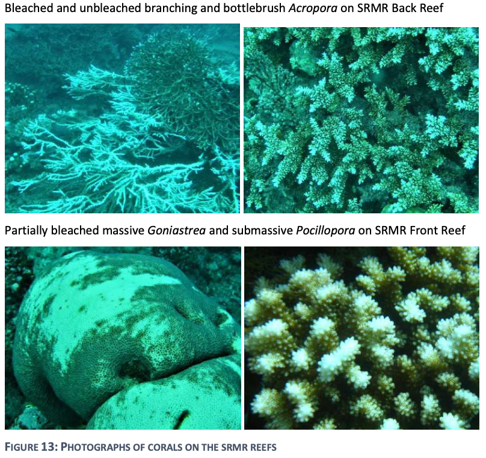
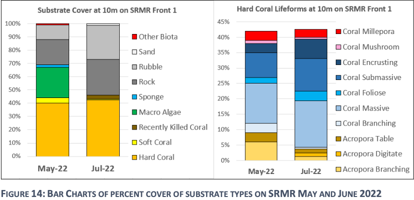

Climate change causes an increase in the frequency and intensity of extreme weather events. Storms have the potential to damage coral reefs in the Beqa Lagoon. In June 2022, a coral bleaching event and a strong coral-damaging wave event occured. By conducting reef surveys before and after the storm, scientist found that the reefs in the Shark Reef Marine Reserve demonstrate a "high resilience and recovery potential" because the amount of coral cover did not change significantly.1 However, even though overall coral cover did not change, various stressors including strong storms, high temperatures, and ocean acidification (all of which are connected to climate change and anthropogenic influences) cause the types of coral in the marine reserve to change. Specifically, there is an increase Acropora corals which include elkhorn and staghorn varieties. While these corals grow quickly, they are less resistant to various stressors.1 This reflects a need for continued reef surveys to assess how coral cover and type continues to change.
Helen Sykes, Coral Bleaching in SRMR, 2022.Helen Sykes, Coral Cover in SRMR, 2022.
The figure on the left shows bleached coral in the Shark Reef Marine Reserve after the 2022 bleaching event. Different coral types rebound differently after bleaching events, potentially changing the composition of the reefs. While the Shark Reef Marine Reserve continues to display resilience, frequent or severe bleaching events can kill entire reefs. The figure on the right shows how the substrate and coral composition of the reef changed after the 2022 storm. While the total coral cover did not change, Acropora cover decreased, although they have likely since rebounded since they grow quickly.
Tourism and Shark Feeding
It is unclear if any of the sharks at the Shark Reef Marine Reserve are dependent on the tuna heads fed to them by Beqa Adventure Divers, the tourism operator. One study conducted at the reserve found that 2.3 tuna heads consumed per week could meet the energy requirements of an adult bull shark.2 Since the dives are conducted two times a day, five days a week, there is a concern that some of the sharks may rely on the provisioning as their primary food source. Since sharks are keystone species, changing their feeding habits can significantly alter the entire ecosystem. While a second study using stable isotope analysis did not find any evidence that the provisioning is a significant component of bull shark diets, more research needs to be done to better understand how provisioning tourism effects sharks.2 In addition, it is important to harness local knowledge to identify individual sharks and to prevent one shark from being overfed. Other knowledge gaps include how shark feeding operations effect multi-species sites and the greater ecosystem, as well as if the presence of nearby dive operators effects the abundance of sharks.3
Overfishing and Poaching
The no-take zone in the Beqa Lagoon is enforced by Beqa Adventure Divers and the Fish Wardens they train with the Fiji Department of Fisheries. During the COVID-19 pandemic, the scuba diving trips to the reserve were not running, so very few people were in the lagoon to enforce the fishing bans. In addition, without tourism for employment and without new levy payments, many locals relied on subsistence fishing. A 2022 biodiversity assessment of the Shark Reef Marine Reserve found that "although combined key indicator fish numbers did not appear to decrease, there was an obvious reduction in the type of fish which are largely targeted for sale".1 It is not just local fishermen engaging in illegal fishing practices. The village head of Galoa has spoken out about so-called `roving bandits` who come from afar and poach from the no-take zone. He highlights how it is difficult to enforce these fishing bans, "Even in the middle of the night as we watch from shore, we can see their lights and hear the commotion, but we are unable to do anything".4
A 2015 study sought to characterize Fijian shark fisheries. On average, the bycatch fishermen caught 2-3 sharks per week, while those who targeted sharks caught 3-6 per week.5 They found that, of the fishermen interviewed who reported catching sharks, 81.6% of them caught sharks as bycatch, while the remaining 18.4% targeted sharks. When the fishermen were asked why they do or do not catch sharks, this is how the fishermen responded:
Cultural, religious, and personal values were often cited as to why someone chose not to target sharks. Only 15.2% of the fishermen interviewed said they do not target sharks because it is prohibited by law, suggesting that some village chiefs may not have an underding of the importance of sharks, or there is a lack of enforcement of shark fishing bans.
Of note, the most common reason as to why fishermen do not fish sharks is because of cultural ecosystem service they provide. Sharks are very important figures in Fijian culture. In Fijian mythology, Dakuwaga, the shark-god protects fishermen from the dangers of the sea. Learn more about Dakuwaga here:
Water Pollution and Habitat Degredation
A 2019 reef survey of the Beqa Lagoon found that “Deuba and Navua rivers are washing water contaminated by sewage into the marine environment as far out as the north-eastern reefs of Beqa Lagoon”.6
A lack of sewage infastructure and treatment leads it to enter the rivers and oceans as non-point source nutrient pollution. Ideally, the levy payments to the coastal villages can be partially used to improve sewage infastructure, especially since cleaner rivers and oceans promotes tourism, creating a positive feedback loop.
The river systems are important nurseries for bull sharks. Many locals report having seen large, likely pregnant female, bull sharks swimming through the Navua rivers.7 This local ecological knowledge, while often imprecise and qualitative, is valuable for scientific research and conservation efforts because they invite stakeholder participation and often highlight subtle ecosystem changes that otherwise would have been missed.7
How do these stressors relate to eachother?
A dependence on tourism revenue incentivizes shark feeding which may change shark movement behaviors and the balance of the entire ecosystem. If the ecosystem is significantly damaged or the sharks leave, then there will be no tourism revenue
Poaching during economic downturns such as the COVID-19 pandemic or due to poor enforcement of the Marine Protected Area reduces fish populations, which increases the need for alternative income sources other than tourism, ultimately increasing illegal fishing activities.
Climate change effects such as increased storm intensity and increased ocean temperatures damage coral reefs in the Beqa Lagoon. So far, the reefs have rebounded, but Acropora species are increasingly dominant because they grow quickly; however, they are less resilient to future climate change effects.
Without continuous research about the effects of tourism on the Beqa Lagoon ecosystem, the Prius Effect may occur. The Prius Effect is when we think we are doing something good for the environment, so we keep doing it. If we incorrectly assume that the shark tourism benefits the environment, then we will keep doing it until the ecosystem collapses and the local villages will lose a significant income source.
1. Helen Sykes, “Shark Reef Marine Reserve (SRMR) Benthic Biodiversity Assessments, Serua, Viti Levu, Fiji,” Beqa Adventure Divers, September 2022, https://www.fijisharkdive.com/wp-content/uploads/2023/09/SRMR-Benthic-Biodiversity-2022-_compressed.pdf.↩ 2. Kátya G. Abrantes, Juerg M. Brunnschweiler, and Adam Barnett, “You Are What You Eat: Examining the Effects of Provisioning Tourism on Shark Diets,” Biological Conservation 224 (June 18, 2018): 300–308, https://doi.org/https://doi.org/10.1016/j.biocon.2018.05.021., pg. 301-304.↩ 3. Juerg M. Brunnschweiler, Kátya G. Abrantes, and Adam Barnett, “Long-Term Changes in Species Composition and Relative Abundances of Sharks at a Provisioning Site,” PLoS ONE 9, no. 1 (January 23, 2014), https://doi.org/10.1371/journal.pone.0086682, pg. 9.↩ 4. “Reef to Community: Sustaining Our Future through Partnership and Conservation,” United Nations Development Programme, February 21, 2024, https://www.undp.org/pacific/press-releases/reef-community-sustaining-our-future-through-partnership-and-conservation.↩ 5. Kerstin B. Glaus et al., “Characteristics of the Shark Fisheries of Fiji,” Scientific Reports 5, no. 1 (December 2, 2015), https://doi.org/10.1038/srep17556.↩ 6. Helen Sykes, “Reef Surveys, Beqa and Serua, Fiji,” Beqa Adventure Divers, June 2019, https://www.fijisharkdive.com/wp-content/uploads/2023/09/Beqa-and-Serua-Reef-surveys-2019-for-BAD_compressed.pdf.↩ 7. Eroni Rasalato, Victor Maginnity, and Juerg M. Brunnschweiler, “Using Local Ecological Knowledge to Identify Shark River Habitats in Fiji (South Pacific),” Environmental Conservation 37, no. 1 (March 2010): 90–97, https://doi.org/10.1017/s0376892910000317., pg. 93-95.↩